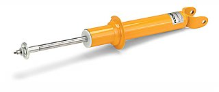
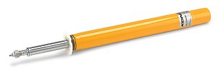
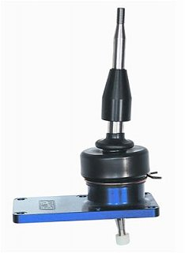
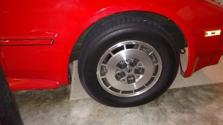
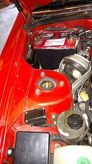
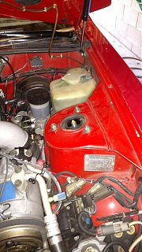
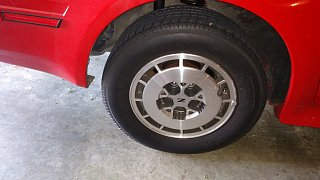
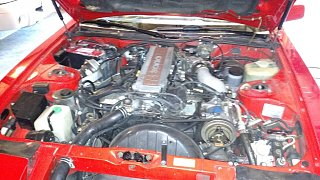

-
I am replacing my 86NA struts and shocks with the adjustable KONI yellow sport shocks 8641-1060SPORT on the front and 26-1248SPORT for the rear. I want to replace the springs but do not want the performance lowering springs. I have found the MOOG CC263 OEM type springs and am wondering if anyone has has any experience with them? Also I have not been able to find any front springs and could use some advice on where to find them.
I googled to death the springs but after coming to no conclusion decided to slink on back to this board and just ask..
I have a new B&M short shifter being delivered this week along with the KONI's.
After these things get sone I have some 17 inch cobra wheels in mind.
Just enjoying this 86NA.
Advice appreciated.
 1978 280Z - great fun!
1981 280ZX - more fun!!
1986 300ZX NA2T - Lots of fun! -
Why do you need to replace your springs in the first place? If you are looking for springs with a stiffer spring rate pick up a set of used Turbo or Shiro springs. Noticeable difference on mine switching from the NA springs to Turbo ones. -
I just figured that since the car is so old I might as well replace them while I am doing this other work.1978 280Z - great fun!
1981 280ZX - more fun!!
1986 300ZX NA2T - Lots of fun! -
They are on sale now from tirerack.comWho needs new car's, Nissan had it right 30 years ago!!! -
I think moog's universal springs are also an option. They might have a pretty close match. You can try asking them or a distributor. -
I did get those koni's for 20% off at tire rack. They arrived today and I decided to give the moog cargo coil OEM replacement springs a shot. They should get here in about 10 days or so. I'm putting that B&M short throw shifter on this weekend.1978 280Z - great fun!
1981 280ZX - more fun!!
1986 300ZX NA2T - Lots of fun! -
The B&M is fun. You might need a gear wrench to get the front two bolts in/out - at least I did, other methods may vary. And you'll need to reuse the nylon bushing from the stock shifter. Otherwise, it's an easy install. -
I installed the B&M short throw shifter this past weekend and it really made a difference in the drive-ability IMO. The tools required were a couple of different length 12mm wrenches, a small ratchet with a 12mm socket and a thin strong flat head screwdriver to remove the plastic console panels. I could have used a 12mm ratchet wrench as other folks have mentioned but didn't want to stop and go buy one. I will not post pictures of the install as there are plenty of them already available online.
I am just starting to enjoy this car a lot!1978 280Z - great fun!
1981 280ZX - more fun!!
1986 300ZX NA2T - Lots of fun! -
I had the KONI's front and rear installed this week as well as the moog springs and thought I would give this post an update.
The car sits probably 1.5 to 2 inches higher all around which is sort of kind of what I wanted before starting in on the suspension but now that I have it there I am not sure I like it.
It does handle a lot better with springs and shocks replaced but I kind of wish I had done the springs separately so I could have gotten a better feel for how much the shocks alone would affect the car.
There is so much distance between the top of the tires and fender it really looks funny to me.
I am looking to order the Cobra R wheels in the next week or so and was going to go with 245x45x17 wheels and tires but now with so much space to consume am considering an 18 inch wheel.
I'm including some pictures of the wheels clearance and also the "under the hood" shots of the KONI adjustable struts.    1978 280Z - great fun!
1981 280ZX - more fun!!
1986 300ZX NA2T - Lots of fun! -
It wouldn't matter if you get 18" or even 19" wheels IF you're looking to keep the speedometer reading correctly. If you plus size from 16" to 18" your total height of wheel+tire will be the same. It will do nothing to alleviate the fender gap. I would drive the car around for a while and see if the suspension settles at all. -
You're right, I just have to let the suspension settle in. I have not put 50 miles on it yet. Also I can go back to my original springs if the need arises. I have been concentrating on those Cobra R wheels.The thing that bothers me about getting them is that the sellers will not guarantee they will fit so I just have to go out on a limb and take the plunge based on what I have been able to read and scan online and buy them. Then I guess see if they fit flush or if I'll need a small spacer for the front. The pcd is OK but the centerbore is 70.6 and my 86NA centerbore is 66.1. As far as I can tell I plan on getting the 17x9 e24 chrome Cobra R 1995 replicas. I have a set of goodyear 215/45 r17's that I may use instead of buying a new set of 245/45 r17's.1978 280Z - great fun!
1981 280ZX - more fun!!
1986 300ZX NA2T - Lots of fun! -
Larger center bore is OK, you can use rings.
Info about spacing:
http://www.z31.com/wiki/doku.php?id=…cations:wheels -
image_1956.jpg image_1955.jpg The suspension settled in nicely and I finally got the wheels in. I put 245/45/17 tires with Cobra R wheels on. Rear fit with no mods while the front required longer studs and a 10mm spacer. I'll try to attach a before picture and after.
SO this is all the mods for a while. The new rear MOOG springs, the KONI yellow adjustable sport shocks and struts, the B&M short throw shifter and now the wheels/tires.
The car drives and handles really good now.Last edited by rcasey56; 09-21-2016, 11:14 PM.1978 280Z - great fun!
1981 280ZX - more fun!!
1986 300ZX NA2T - Lots of fun! -
Holy 4x4 batman…is that last pic after they settled in?
But besides the snark, what did you do for spring seats.
Thanks for the pics, didn't know that koni had an adjustable strut.
I've got some illuminas that are blown and i like having the option to adjust to a softer ride in the winter months.
84 AE/Shiro #683/Shiro #820/84 Turbo -
I am not sure I would call the suspension settled in as I have only put 200 miles on it so far. But to answer the question it does indeed sit that high. Since the wheels have been put on it I have kind of warmed up to the way it sits now. The front struts are adjustable under the hood by simply turning a small white knob while the rear shocks would need to be pulled loose at the bottom, push an adjustment button and rotated depending on the desired setting. The spring kit only had the springs so the rubber mounts from the car were reused as far as I can tell. It does not squat any more in the rear period. I also kept my NA stock springs if the ride turns out to be too hard in the long run. I have some pictures I'll post later of the underside shocks and springs. The KONI's came from Tire Rack on sale for 20% off. I love those wheels on it!
1978 280Z - great fun!
1981 280ZX - more fun!!
1986 300ZX NA2T - Lots of fun!

Copyright © 2006–. All rights reserved. Privacy Policy